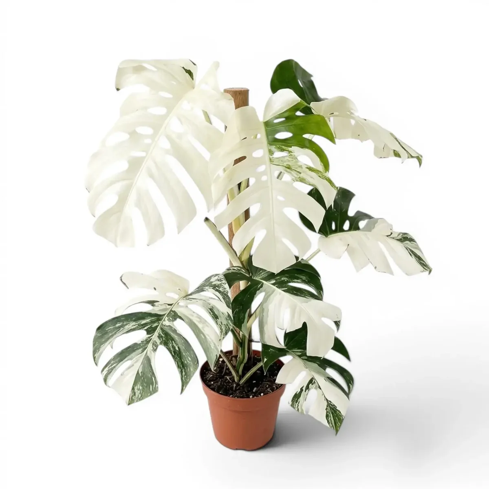
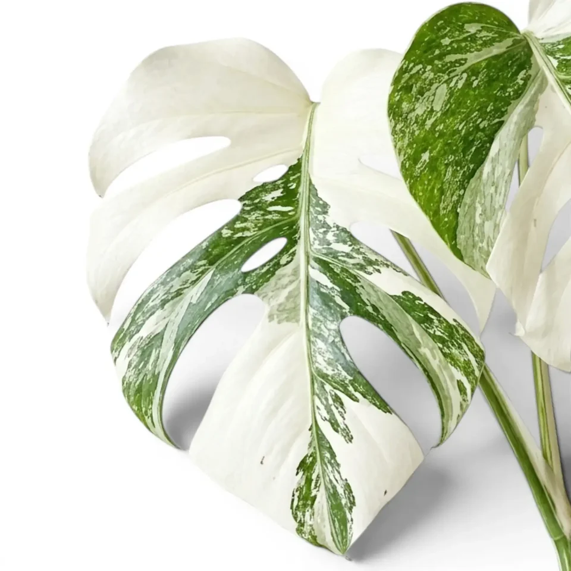
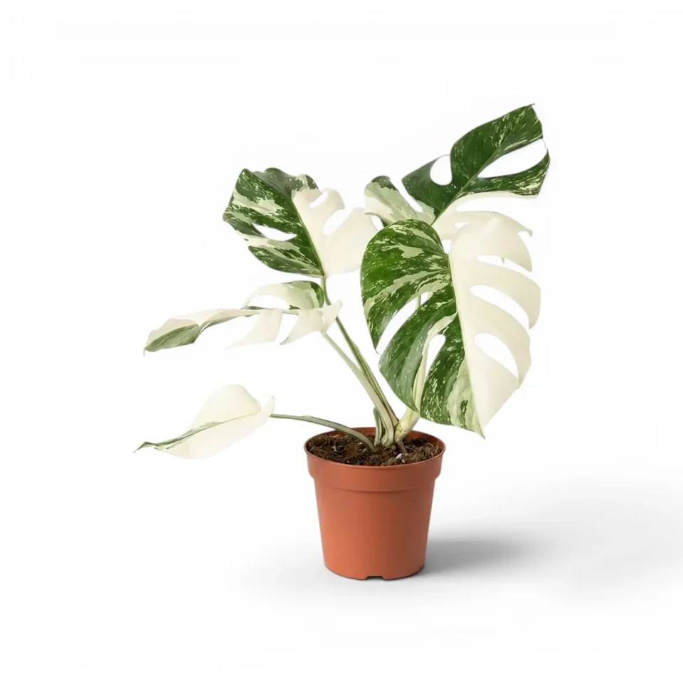

Especificaciones:
| Altura | 60-90 cm |
|---|---|
| Diámetro de la maceta | 15-20 cm |
| Tipo de planta | Planta de interior |
| Color de la hoja | Verde y blanco con orificios |
| Necesidades | Luz indirecta y riego moderado |
Planta de interior de hojas grandes, con orificios en las hojas y de dos bellos colores.



| Altura | 60-90 cm |
|---|---|
| Diámetro de la maceta | 15-20 cm |
| Tipo de planta | Planta de interior |
| Color de la hoja | Verde y blanco con orificios |
| Necesidades | Luz indirecta y riego moderado |